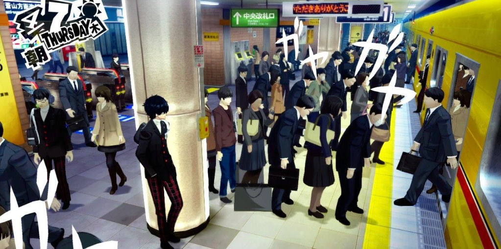
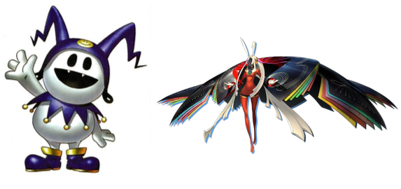
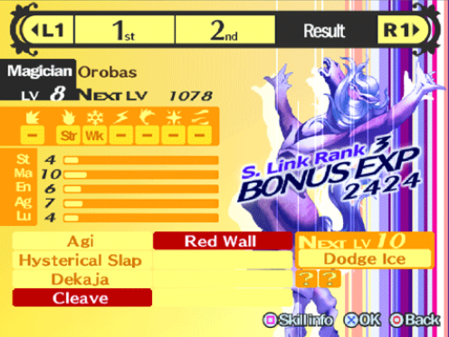
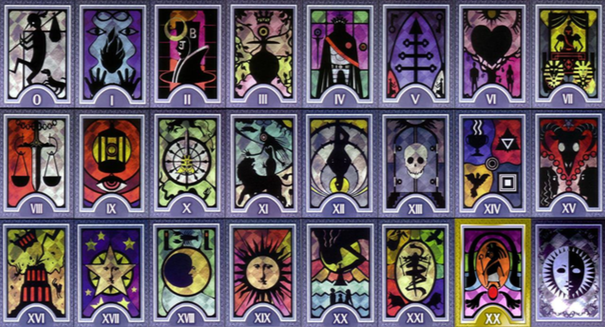
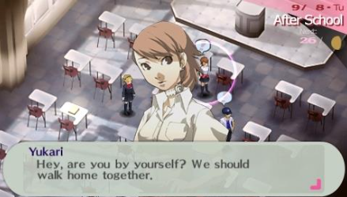
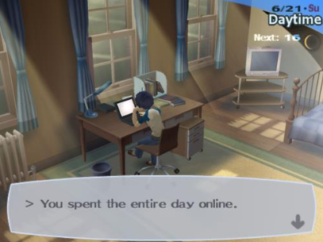

Métro-boulot-dodo. Une rengaine quotidienne synonyme de répétitivité, de lassitude et d’ennui pour tout étudiant. Mais ajoutez-y un soupçon de psychologie inspirée de Jung, quelques donjons, des monstres à fusionner et à améliorer, puis laissez mijoter un peu pour obtenir un jeu à la fois fascinant et passionnant. Cette idée saugrenue de créer un jeu se basant sur le quotidien d’un étudiant japonais semblait aux antipodes de ce que devait être un jeu vidéo : une fenêtre pour s’évader du quotidien, explorer, rêver. L’idée originale de Persona a été de créer une mise en abîme en vous faisant jouer un étudiant arrivé dans un nouveau lycée et qui voit une telle fenêtre s’ouvrir dans son morne quotidien : il découvre du jour au lendemain un monde obscur et ténébreux qu’il va chercher à explorer, accompagné de ses amis, afin de résoudre un mystère. Un scénario qui ferait presque penser à du Scooby Doo s’il n’était pas question de meurtres (Persona 4), de dépression et de pulsions suicidaires (Persona 3), ou de matérialisation dans le monde réel des désirs refoulés des hommes (Persona 2). L’apparente banalité de la vie d’étudiant est en effet indissociable d’une noirceur rare dans le paysage vidéoludique dans la série Persona, qui a hérité ce trait de la série de dungeon-RPG Shin Megami Tensei, dont Persona était à l’origine un spin off avant de dépasser le maître.
Pour ce qui est du gameplay, Persona reste avant tout un Dungeon-RPG, un genre assez niche dans la grande famille des jeux de rôle. On se rend dans des donjons où l’on affronte des monstres nommés Shadoows régulièrement, avec pour buts principaux le loot et la progression jusqu’au boss de fin de donjon. Le jeu se démarque toutefois par la possibilité donnée aux personnages de se battre non seulement avec des armes, mais aussi avec des Personas, que l’on pourrait définir comme des créatures capables de lancer divers sorts d’attaque, de défense, ou des attaques physiques sur vos adversaires moyennant quelques points de SP. Ces Personas sont véritablement au centre du jeu, tant leurs caractéristiques (forces, faiblesses) impactent votre personnage et sa façon de jouer. Le jeu se complexifie davantage quand on voit que chaque Persona peut gagner des niveaux et de nouvelles compétences, et surtout qu’il est possible de les fusionner pour obtenir une nouvelle Persona encore plus puissante qui héritera d’une partie des compétences des Personas fusionnées. Cette dimension « capture et fusions de monstres » vient très agréablement nuancer la monotonie des phases de farm dans les donjons. Au joueur de réaliser les bonnes fusions, d’augmenter le niveau de ses Personas pour obtenir le skill qui tue et le léguer ensuite à la Persona plus puissante que l’on obtiendra lors de la fusion suivante.
 Les Personas sont inspirées de personnages mythologiques, comme ici Jack Frost (d) et Kaguya (g)Les phases de donjon ne représenteront pourtant pas l’essentiel de votre temps de jeu. Car la deuxième réussite du jeu a été de lier la vie quotidienne et le système de Personas grâce à plusieurs mécanismes dont le plus important est le système de Social Link (Cooperation dans Persona 5). L’idée est commune pour un RPG : en nouant des liens plus forts avec vos amis, vous deviendrez plus forts. Du bête « Un pour tous, tous pour uns » pourrait-on se dire, sauf que cette idée prend une toute autre ampleur qu’un simple bonus de combat dans Persona : non seulement vous débloquez de nouvelles options de combat, mais en plus (et surtout) vous gagnez des bonus très significatifs au moment de fusionner vos Personas.
 Un écran de fusion de Persona dans Persona 4, avec le bonus d’expérience que lui confère le Social LinkChaque personne vous donnera un bonus de fusion sur un type de Persona différent. En effet, chaque personne avec qui vous aurez l’occasion d’avoir un Social Link et chaque Persona seront identifiés par un arcane du tarot de Marseille, autre héritage de la série SMT. Ainsi, la persona du screen ci-dessus, Orobas, appartient à l’arcane du Magicien, qui correspond dans Persona 4 au S Link avec Yosuke, le meilleur ami du héros.
 Les 23 arcanes de la série telles qu’elles sont représentées dans Persona 4Dès lors la partie simulation de vie du jeu va s’avérer beaucoup plus stratégique que prévu : dois-je passer mon après-midi à améliorer mon S Link avec cette personne, à essayer de réviser les examens à venir, ou bien de travailler à mi-temps pour me constituer un pécule qui me permettra d’améliorer mon équipement ? Choisir comment passer son temps sera essentiel pour la réussite de votre partie dans Persona : oubliez de travailler et vous risquez bien de vous retrouver avec un équipement obsolète incapable d’égratigner un boss un peu retors. Négligez vos relations, et vous vous retrouverez avec des Personas de bas niveau et sans skills.
 Rentrer avec Yukari ? C’est votre dernier mot ? (Persona 3 Portable)Ce lien entre la force de vos amitiés et la puissance de vos Personas ne semble pas évident au premier abord, l’explication est en réalité toute simple : les Personas sont le reflet du cœur de celui qui les invoque. La série des Persona aborde ainsi un sujet de société essentiel, bien que peu abordé, au Japon : la pauvreté relationnelle qui peut exister entre membres d’une même famille, certaines personnes choisissant carrément de se couper du monde (les hikikomori) ou de se réfugier dans un monde imaginaire (les otakus au sens premier du terme). Loin d’être une bête et méchante référence au tout puissant pouvoir de l’amitié, la série Persona aborde un vrai sujet de société à travers son système de Social Link : libre au joueur de ne fréquenter personne, mais il s’en trouvera durement pénalisé, au point de ne pas pouvoir finir le plus souvent.
 Une décision lourde de conséquences... (Persona 3)On peut donc voir que la série des Persona a doublement innové en prouvant qu’il était possible d’aborder des sujets d’actualité et graves sans pour autant en faire un jeu déprimant, et ce grâce à l’écriture remarquable des Social Links qui permettent vraiment de ressentir l’évolution et l’approfondissement de notre relation avec la personne. Atlus nous a également montré qu’il était possible de faire un Dungeon- RPG accessible et peu austère grâce à son système de jeu mêlant intelligemment vie quotidienne et exploration des donjons. Ces deux éléments constituent véritablement les piliers de la série et ce qui la rend unique et inimitable dans le monde archi-concurrentiel du J-RPG. Les réalisateurs des différents opus ont su sans cesse affiner leur formule pour atteindre les sommets avec le dernier opus, Persona 5, dont j’espère que le test sera rendu moins obscur par la lecture de cet article ;)